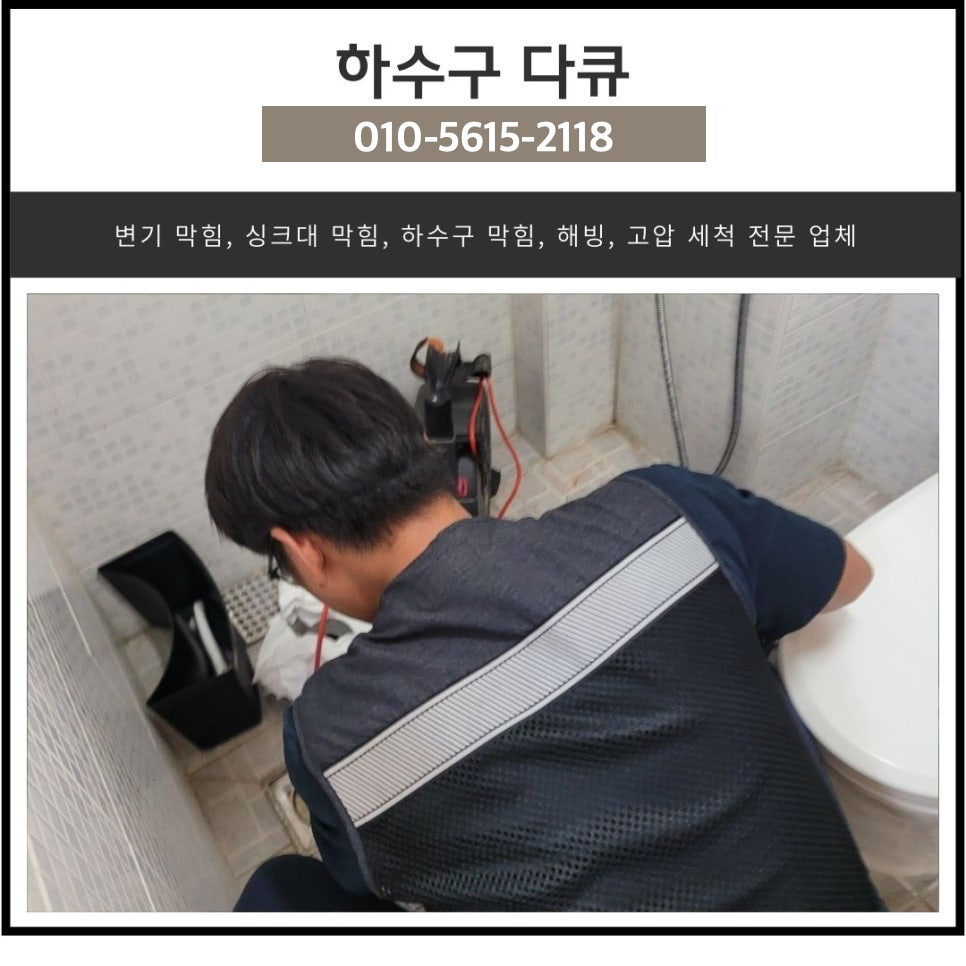
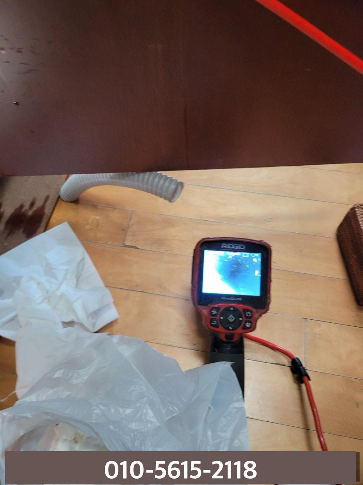
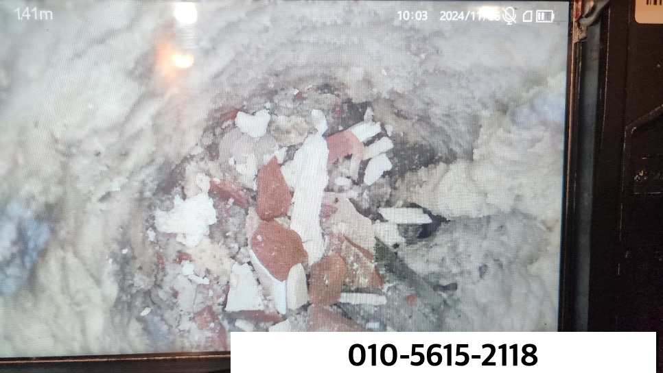
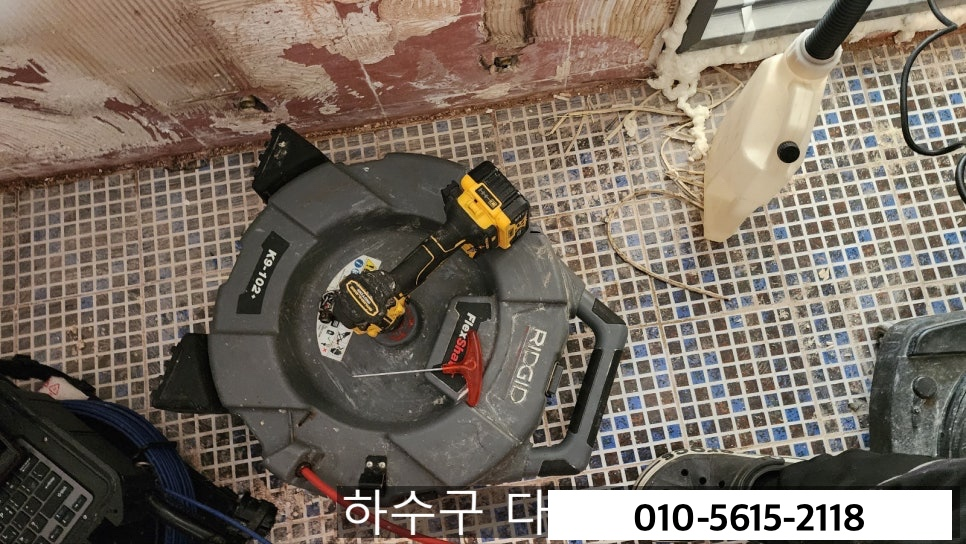
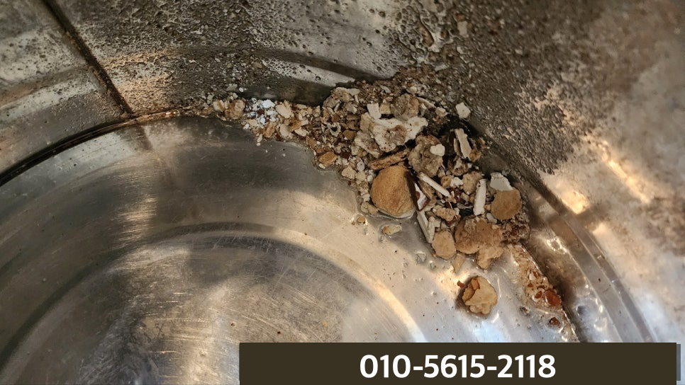
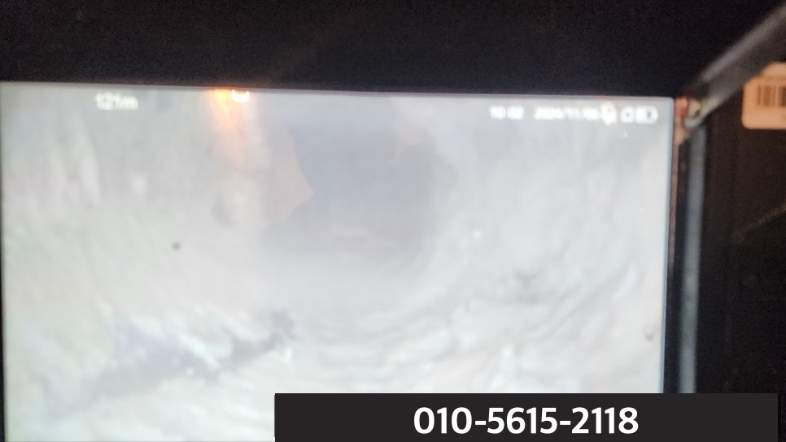
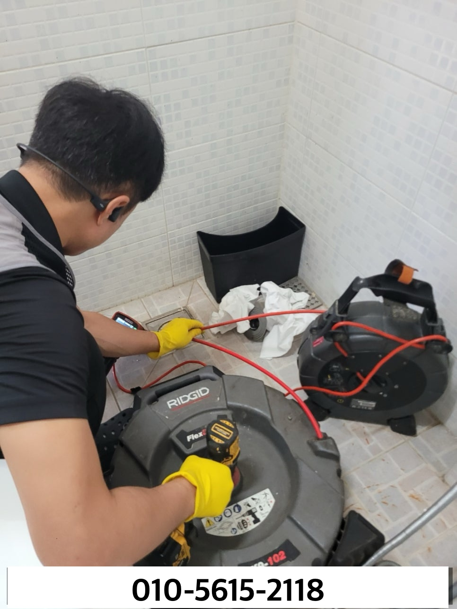

🏠 화성시 향남읍 하수구 막힘 향남 화장실 바닥 뚫는 곳 설비 업체
화성시 향남읍 배관막힘 전문 시공 후기

📋 작업 개요
- 위치: 화성시 향남읍 상신리
- 서비스 유형: 배관막힘, 내시경점검
- 작업 일시:
- 업체명: 하수구수사대 (010-5615-2118)
🔍 문제 상황
안녕하세요.
화성시 향남읍 하수구 막힘, 향남 화장실 바닥 뚫는 설비 업체 하수구 다큐입니다.
화성시 향남읍 하수구 막힘은 일상생활을 하다 보면 생각보다 자주 발생하는 설비 문제입니다.
특히 화장실 바닥 배관이 막히는 경우 배관을 분리하거나 눈으로 직접 볼 수 없어, 향남 화장실 바닥 뚫는 설비 업체의 도움을 받아 근본적인 원인을 파악하고, 원인에 적합한 장비를 이용해 해결하시는 것이 정말 중요합니다.
오늘 현장을 소개하기에 앞서 화장실 바닥 하수구 막힘의 원인에 대해 간단히 알아볼게요.
이물질 또는 머리카락
우리가 화장실을 사용하면서 자연스레 떨어지는 머리카락이나 각종 이물질들이 배수구로 흘러 들어가 하수구 막힘이 발생할 수 있습니다.
2. 석회

🔎 원인 분석
💡 전문가 진단: 향남 화장실 바닥 뚫는 설비 업체
물에 포함되어 있는 칼슘, 마그네슘 같은 무기질 성분이 증발하면서 석회로 변해 배관에 쌓이게 되면서 화장실 배관이 막히기도 합니다.
3. 기름때
우리가 몸에 바르는 화장품에 포함된 화장품 잔여물이나 유분 등이 배관에 쌓이거나, 샴푸 또는 보디워시 등이 배관에 쌓여 두꺼운 층을 형성하게 되면 배관을 막게 됩니다.
4. 먼지나 흙
몸에서 떨어져 나오는 먼지 등이 배관으로 흘러들어가 물과 각종 이물질들이 뒤엉켜 쌓이게 되면서 조금씩 막히게 됩니다.
이렇듯 다양한 원인으로 화장실 하수구 막힘이 발생하다 보니 문제가 발생하면 전문 장비를 이용해 정확한 원인을 찾아 해결하시는 것이 현명한 방법이에요.
향남 화장실 바닥 뚫는 설비 업체
화성시 향남읍에 위치한 가정집에서 연락을 받았습니다.
가정집을 인테리어하는 과정에서 화장실 바닥의 물이 내려가지 않는 것을 확인하고 문제를 해결하기 위해 하수구 다큐로 연락을 주셨어요.

🔧 작업 과정
고객님께 주소를 받아 필요한 장비들을 챙겨 신속하게 현장에 방문했습니다.
화장실 바닥 배관에서 통수가 이루어지지 않는 상태인지 직접 테스트해 보고, 정확한 원인 파악을 위해 내시경 카메라를 배관 내부로 진입시켜 확인해 보기로 했어요.
내시경 카메라가 배관 내부로 진입해서 확인해 보니 배관의 벽면에 기름 슬러지들이 들러붙어있는 상태였고, 인테리어 과정에서 흘러들어간 자재들이 배관을 꽉 막고 있어 물의 흐름을 방해하고 있는 상태였습니다.
고객님께 내시경으로 촬영한 내부의 모습을 보여드리며 상황을 설명해 드리고, 작업 방향에 대해 안내해 드렸어요.
우선 작업 시 흘러들어간 이물질은 석션을 이용해 빨아드리는 작업을 1차로 진행한 뒤 플렉스 샤프트 장비로 슬러지와 잔여 이물질을 제거하기로 했습니다.
인테리어 과정에서 들어간 이물질은 석션으로 어렵지 않게 제거할 수 있었어요.
1차로 이물질이 제거되고, 2차로 벽면에 붙어있는 기름 슬러지를 제거하는 작업을 플렉스 샤프트 장비를 이용해 진행합니다.
플렉스 샤프트 장비의 경우 얇고 긴 노즐이 배관 깊은 곳까지 들어가 작업을 진행하는데요.
노즐 끝에 달려있는 체인이 내부에서 360도로 회전하며 벽면에 붙어있는 이물질을 타격해 제거해 주는 역할을 합니다.
기름 슬러지를 제거하며 배관 깊은 곳까지 진입하자 아까는 확인하지 못했던 더 큰 사이즈의 이물질을 확인할 수 있었어요.
워낙 깊은 곳에 자리 잡은 이물질이다 보니 석션으로 제거가 어려워 플렉스 샤프트 장비로 잘게 부셔서 제거해 주기로 했습니다.
여러 차례 플렉스 샤프트 장비를 이용해 잘게 부셔서 이물질을 모두 제거 완료했고요.
잔여 이물질은 없는지 고객님과 함께 배관 내시경을 이용해 꼼꼼하게 점검도 진행해 드렸습니다.
마지막으로 화장실 바닥에 물을 흘려보내며 다른 문제는 없는지 테스트해 드리고 작업을 마무리할 수 있었습니다.


✅ 작업 완료
지금 하수구 막힘으로 설비업체를 알아보고 계시나요?
하수구 다큐는 전문적인 장비를 이용해 정확한 원인을 파악하고 문제를 해결해 드리고 있습니다.
고민은 해결만 늦출 뿐! 하수구 닥터와 함께 해결해 보세요!
경기도 화성시 향남읍 상신하길로328번길 26 5층 505호 5호




⚠️ 하수구 배관 막힘 예방 및 관리 가이드
- ✅ 머리카락, 비닐, 물티슈 등 물에 분해되지 않는 이물질은 절대 흘려보내지 마세요.
- ✅ 기름기 많은 식기는 설거지 전 키친타올로 먼저 기름때를 닦아내세요.
- ✅ 주기적으로 배수구에 뜨거운 물을 가득 부어주어 유지방 고착을 방지하세요.
- ✅ 작업 후 1년 이내 재발 시 무상 A/S 보증 서비스를 제공합니다.
💡 핵심 정리
- 확실한 장비 작업(내시경 점검 및 샤프트 스케일링)으로 원인을 뿌리 뽑습니다.
- 작업 후 1년 이내에 동일한 부위 재발 시 100% 무상 A/S 서비스를 보장합니다.
- 서울 · 경기 · 인천 전 지역에 24시간 언제든 긴급 출동할 수 있도록 항시 대기 중입니다.
❓ 자주 묻는 질문 (FAQ)
🚨 화성시 향남읍 배관막힘 문제로 고민이신가요?
정확한 원인 진단과 확실한 시공으로 재발 없는 해결을 약속드립니다.
24시간 긴급 출동 | 서울 · 경기 · 인천 전지역 | 1년 내 재발 시 무상 A/S